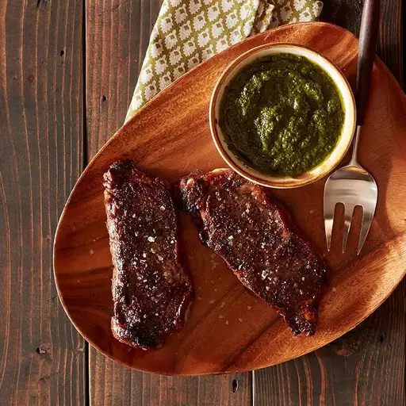

The final product, a delicious steak
Ingredients:
- 5 tablespoons olive oil, divided
- 1 teaspoon ground cumin
- 1 teaspoon crushed red pepper flakes
- 1 teaspoon dried oregano
- 2 16oz New York strip steaks
Chimichurri Suace
- 8 cloves garlic, peeled
- 1/2 cup fresh parsley leaves
- 1/2 cup fresh cilantro leaves
- 2 tablespoons red wine vinegar
- 1 1/2 teaspoons salt
- 1/4 teaspoon ground black pepper
- Reynolds Wrap Aluminum Foil
Directions:
- Step 1: Preheat oven to 400
- Step 2: Mix together 3 tablespoons olive oil, cumin, red pepper flakes, oregano and salt to taste in a bowl and coat the steaks in the mixture
- Step 3: Heat a large frying pan on high heat and fry the steaks on each side for 2 to 3 minutes until they are browned
- Step 4: Place two 1 1/2 to 2 feet long sheets of Reynolds Wrap Aluminum Foil on a table and place each steak in the center of the foil and fold up the ends and the outside of the foil to create a packet
- Step 5: Bake the steak for 10 minutes for a medium-rare internal temperature. Add 5 more minutes of baking to achieve a medium internal temperature.
- Step 6: Remove the steaks from the packets and let them rest for 2 to 3 minutes before serving
- Step 7: Combine the garlic, parsley, cilantro, red wine vinegar, remaining 2 tablespoons of olive oil and salt and pepper in a food processor and process on high speed until it becomes like a paste
- Step 8: Serve the steak alongside the Chimichurri Sauce
- Step 9: Enjoy!